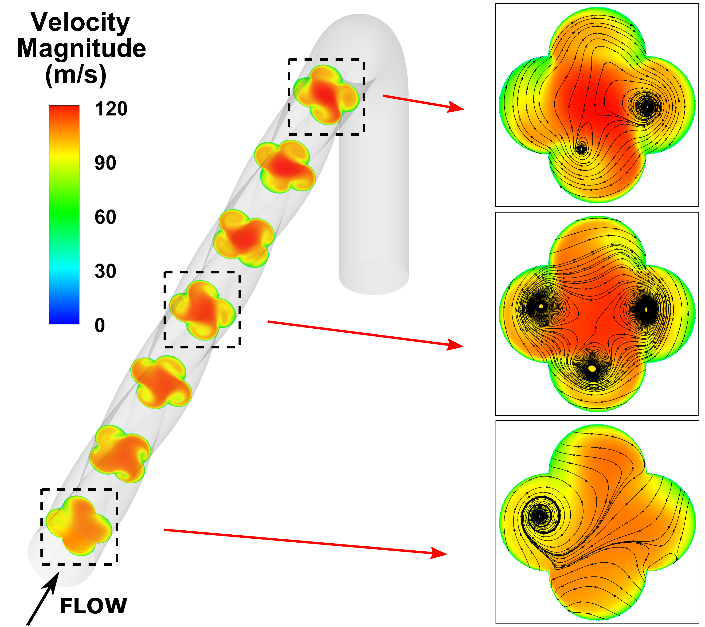
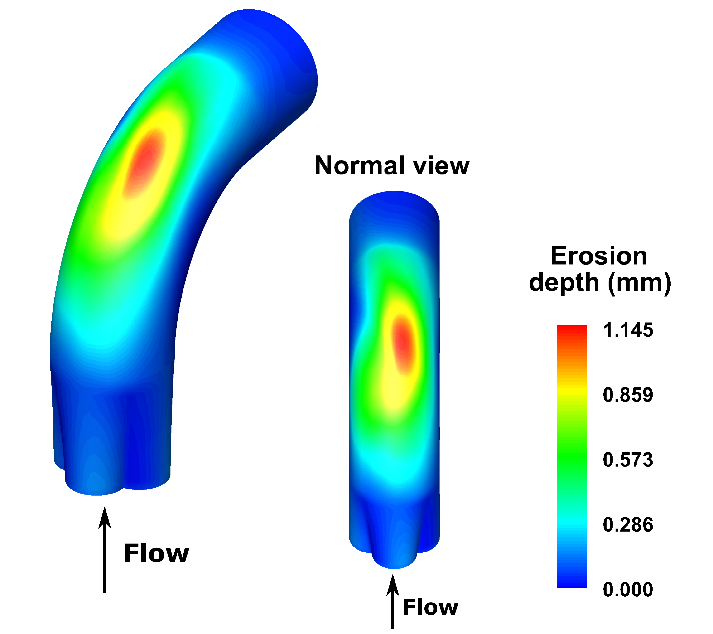

Erosão, Desgaste e Integridade de Dutos
Esta área investiga mecanismos de erosão e desgaste em tubulações e equipamentos industriais, combinando simulação numérica e análise de desempenho para aumentar a confiabilidade operacional.
Os estudos buscam prever danos, apoiar estratégias de mitigação e ampliar a vida útil de sistemas críticos, contribuindo para segurança e redução de custos em operação e manutenção.
As simulações acompanham trajetórias e impactos de partículas nas paredes dos dutos para estimar a distribuição e a intensidade do desgaste. A análise de diferentes condições de escoamento e geometrias permite investigar estratégias para reduzir a erosão e prolongar a vida útil dos componentes.

